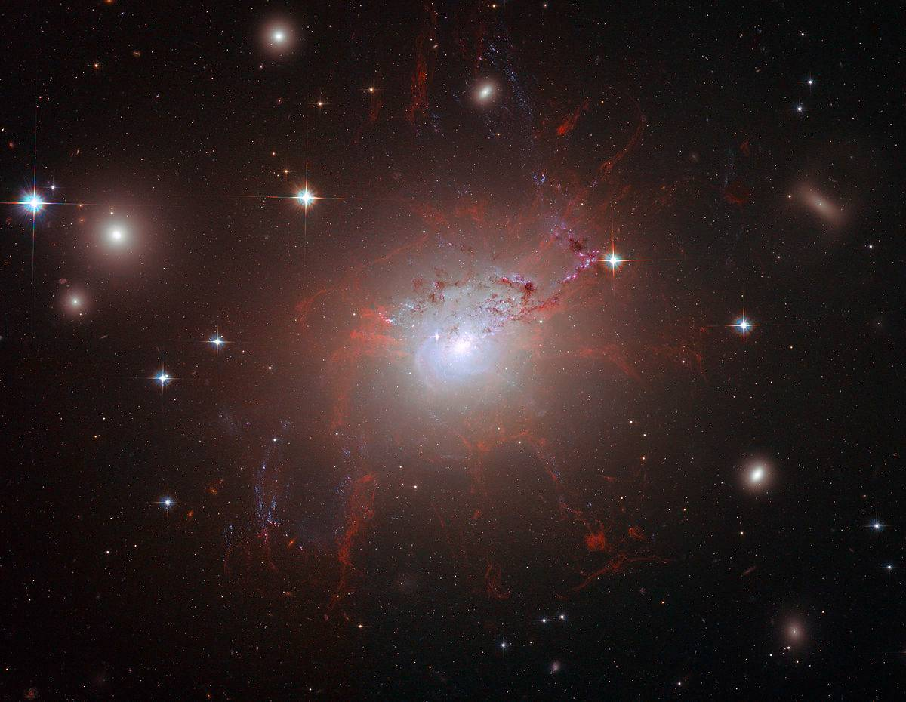
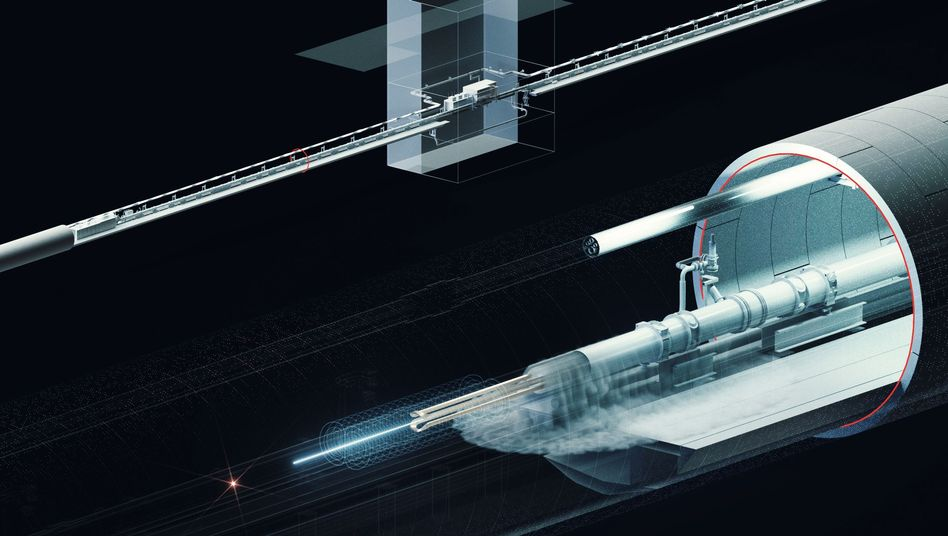
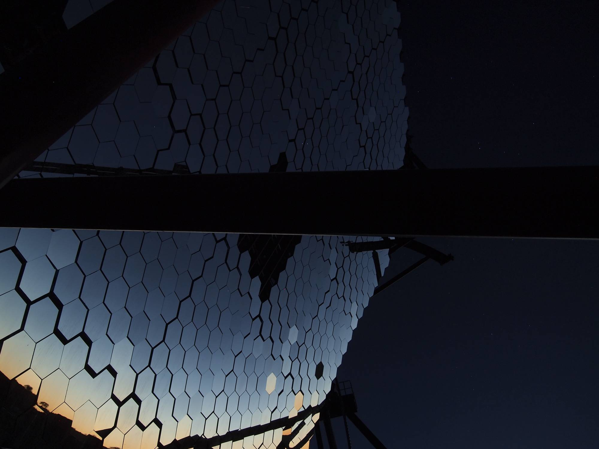
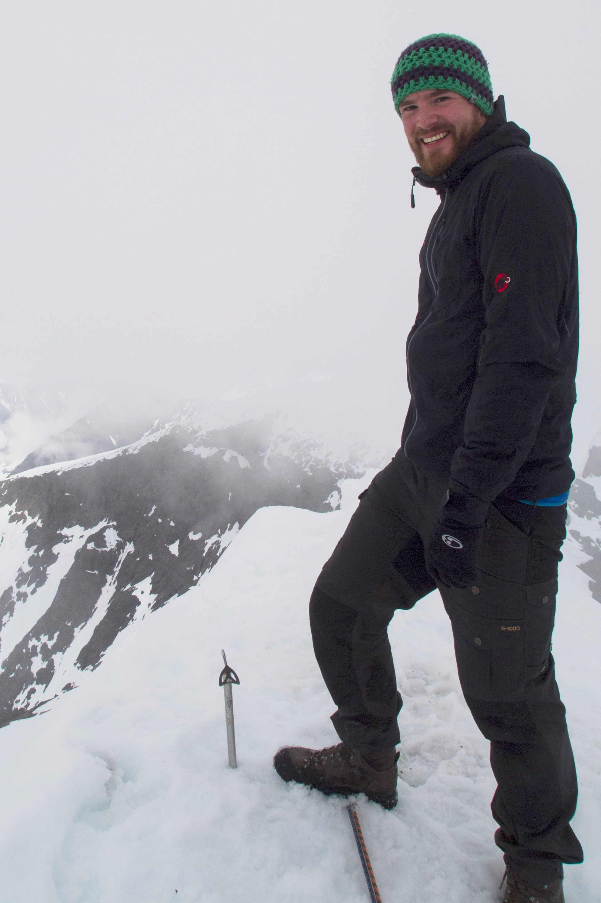

<!DOCTYPE html>
<html  >
<head>
  <!-- Site made with Mobirise Website Builder v4.12.3, https://mobirise.com -->
  <meta charset="UTF-8">
  <meta http-equiv="X-UA-Compatible" content="IE=edge">
  <meta name="generator" content="Mobirise v4.12.3, mobirise.com">
  <meta name="viewport" content="width=device-width, initial-scale=1, minimum-scale=1">
  <link rel="shortcut icon" href="assets/images/logo2.png" type="image/x-icon">
  <meta name="description" content="">
  
  
  <title>Home</title>
  <link rel="stylesheet" href="assets/web/assets/mobirise-icons/mobirise-icons.css">
  <link rel="stylesheet" href="assets/bootstrap/css/bootstrap.min.css">
  <link rel="stylesheet" href="assets/bootstrap/css/bootstrap-grid.min.css">
  <link rel="stylesheet" href="assets/bootstrap/css/bootstrap-reboot.min.css">
  <link rel="stylesheet" href="assets/socicon/css/styles.css">
  <link rel="stylesheet" href="assets/tether/tether.min.css">
  <link rel="stylesheet" href="assets/dropdown/css/style.css">
  <link rel="stylesheet" href="assets/theme/css/style.css">
  <link rel="preload" as="style" href="assets/mobirise/css/mbr-additional.css"><link rel="stylesheet" href="assets/mobirise/css/mbr-additional.css" type="text/css">
  
  
  
</head>
<body>
  <section class="menu cid-qv4TCitAlL" once="menu" id="menu1-1">

    

    <nav class="navbar navbar-expand beta-menu navbar-dropdown align-items-center navbar-fixed-top navbar-toggleable-sm bg-color transparent">
        <button class="navbar-toggler navbar-toggler-right" type="button" data-toggle="collapse" data-target="#navbarSupportedContent" aria-controls="navbarSupportedContent" aria-expanded="false" aria-label="Toggle navigation">
            <div class="hamburger">
                <span></span>
                <span></span>
                <span></span>
                <span></span>
            </div>
        </button>
        <div class="menu-logo">
            <div class="navbar-brand">
                
                
            </div>
        </div>
        <div class="collapse navbar-collapse" id="navbarSupportedContent">
            <ul class="navbar-nav nav-dropdown navbar-nav-top-padding" data-app-modern-menu="true"><li class="nav-item">
                    <a class="nav-link link text-white display-7" href="#top">
                        &nbsp;Home</a>
                </li><li class="nav-item"><a class="nav-link link text-white display-7" href="index.html#content5-3">
                        &nbsp;About me</a></li><li class="nav-item"><a class="nav-link link text-white display-7" href="index.html#content5-9">
                        &nbsp;My Research</a></li><li class="nav-item"><a class="nav-link link text-white display-7" href="index.html#content4-h">
                        Data files</a></li>
                <li class="nav-item">
                    <a class="nav-link link text-white display-7" href="index.html#info3-m">
                        
                        Publications</a>
                </li><li class="nav-item"><a class="nav-link link text-white display-7" href="index.html#content4-u">
                        
                        Teaching</a></li><li class="nav-item"><a class="nav-link link text-white display-7" href="index.html#content4-p">
                        
                        Talks</a></li></ul>
            <div class="navbar-buttons mbr-section-btn"><a class="btn btn-sm btn-primary display-4" href="http://web.stanford.edu/~mameyer/data/CV_mmeyer.pdf">
                    <span class="mbri-save mbr-iconfont mbr-iconfont-btn "></span>
                    Download CV</a></div>
        </div>
    </nav>
</section>

<section class="engine"><a href="https://mobirise.info/j">website templates</a></section><section class="carousel slide cid-qv527j2dy0" data-interval="false" id="slider1-8">

    

    <div class="full-screen"><div class="mbr-slider slide carousel" data-keyboard="false" data-ride="carousel" data-interval="7000" data-pause="true"><ol class="carousel-indicators"><li data-app-prevent-settings="" data-target="#slider1-8" class=" active" data-slide-to="0"></li><li data-app-prevent-settings="" data-target="#slider1-8" data-slide-to="1"></li><li data-app-prevent-settings="" data-target="#slider1-8" data-slide-to="2"></li></ol><div class="carousel-inner" role="listbox"><div class="carousel-item slider-fullscreen-image active" data-bg-video-slide="false" style="background-image: url(assets/images/1200px-ngc-1275-hubble-1200x930.jpg);"><div class="container container-slide"><div class="image_wrapper"><div class="mbr-overlay"></div><div class="carousel-caption justify-content-center"><div class="col-10 align-left"><h2 class="mbr-fonts-style display-1">Welcome</h2><p class="lead mbr-text mbr-fonts-style display-5">To the homepage of Manuel Meyer,<br>researcher in high-energy astroparticle physics. &nbsp;</p><div class="mbr-section-btn" buttons="0"><a class="btn  display-4 btn-secondary" href="index.html#content5-3">LEARN ABOUT ME</a> </div></div></div></div></div></div><div class="carousel-item slider-fullscreen-image" data-bg-video-slide="false" style="background-image: url(assets/images/f09810fd-0001-0004-0000-000001483687-w948-r1.77-fpx60.68-fpy49.98.jpg);"><div class="container container-slide"><div class="image_wrapper"><div class="mbr-overlay"></div><div class="carousel-caption justify-content-center"><div class="col-10 align-left"><h2 class="mbr-fonts-style display-1">My Research</h2><p class="lead mbr-text mbr-fonts-style display-5">My main field is high-energy astrophysics. Click below to learn more and browse data files for publication results.</p><div class="mbr-section-btn" buttons="0"><a class="btn  btn-primary display-4" href="index.html#content5-9">LEARN MORE ABOUT MY RESEARCH</a> </div></div></div></div></div></div><div class="carousel-item slider-fullscreen-image" data-bg-video-slide="false" style="background-image: url(assets/images/p2110855-2000x1500.jpg);"><div class="container container-slide"><div class="image_wrapper"><div class="mbr-overlay"></div><div class="carousel-caption justify-content-center"><div class="col-10 align-left"><h2 class="mbr-fonts-style display-1">Publications</h2><p class="lead mbr-text mbr-fonts-style display-5">You are welcome to download my publication list and browse my recent talks that I have given at international conferences, seminars, and public outreach events.</p><div class="mbr-section-btn" buttons="0"><a class="btn display-4 btn-primary" href="http://web.stanford.edu/~mameyer/data/publication_list_mmeyer.pdf">DOWNLOAD PUBLICATION LIST</a> <a class="btn  btn-white-outline display-4" href="index.html#content4-p">TALKS</a></div></div></div></div></div></div></div><a data-app-prevent-settings="" class="carousel-control carousel-control-prev" role="button" data-slide="prev" href="#slider1-8"><span aria-hidden="true" class="mbri-left mbr-iconfont"></span><span class="sr-only">Previous</span></a><a data-app-prevent-settings="" class="carousel-control carousel-control-next" role="button" data-slide="next" href="#slider1-8"><span aria-hidden="true" class="mbri-right mbr-iconfont"></span><span class="sr-only">Next</span></a></div></div>

</section>

<section class="mbr-section content5 cid-qv4YlExSu3" id="content5-3">

    

    

    <div class="container">
        <div class="media-container-row">
            <div class="title col-12 col-md-8">
                <h2 class="align-center mbr-bold mbr-white pb-3 mbr-fonts-style display-1">
                    ABOUT ME</h2>
                
                
                
            </div>
        </div>
    </div>
</section>

<section class="mbr-section content6 cid-qv4YXEFXXq" id="content6-5">
    
     
    
    <div class="container">
        <div class="media-container-row">
            <div class="col-12 col-md-8">
                <div class="media-container-row">
                    <div class="mbr-figure" style="width: 80%;">
                        
                    </div>
                    <div class="media-content">
                        <div class="mbr-section-text">
                            <p class="mbr-text mb-0 mbr-fonts-style display-7">I am a researcher in high-energy astroparticle physics and Marie Curie Research fellow at the Erlangen Centre for Astroparticle Physcs (<a href="https://ecap.nat.fau.de/" target="_blank">ECAP</a>).&nbsp;<br><br>I am also the deputy coordinator of the Dark Matter &amp; Exotic Physics working group of the Cherenkov Telescope Array (<a href="http://cta-observatory.org/" target="_blank">CTA</a>) Consortium and former converner of the Dark Matter working group of the <a href="http://fermi.gsfc.nasa.gov/" target="_blank">Fermi-LAT</a> (Large Area Telescope) Collaboration. Furthermore, I'm a member of the <a href="https://www.mpi-hd.mpg.de/hfm/HESS/" target="_blank">H.E.S.S.</a> (High Energy Stereoscopic System) Collaboration, and, since 2019, the Any Light Particle Search (<a href="https://alps.desy.de/" target="_blank">ALPS</a>) Collaboration.<br>&nbsp;<br>Before joining ECAP I was a Feodor Lynen Research fellow of the Humboldt foundation at Stanford University and the Kavli Insitute of Particle Astrophysics and Cosmology (<a href="http://kipac.stanford.edu/" target="_blank">KIPAC</a>) and a return fellow in the ALPS group at DESY. I have been a post-doc at the <a href="http://okc.albanova.se/" target="_blank">Oskar Klein Centre</a> at Stockholm University in Jan Conrad's <a href="http://www.fysik.su.se/~conrad/" target="_blank">group</a>.<br><br>Originally, I am from Hamburg, Germany, where I also did my <a href="http://inspirehep.net/record/1254304" target="_blank">PhD</a> in Prof. Dieter Horns' <a href="http://www.iexp.uni-hamburg.de/groups/astroparticle/" target="_blank">group</a>. My masters thesis (in German) is available <a href="http://www.iexp.uni-hamburg.de/groups/astroparticle/de/forschung/meyer_diplom.pdf" target="_blank">here</a>.&nbsp;<br></p>
                        </div>
                    </div>
                </div>
            </div>
        </div>
    </div>
</section>

<section class="cid-rY5Yy9pEBB" id="social-buttons2-v">

    

    

    <div class="container">
        <div class="media-container-row">
            <div class="col-md-8 align-center">
                <h2 class="pb-3 mbr-fonts-style display-7">
                    FIND ME ON SOCIAL MEDIA</h2>
                <div class="social-list pl-0 mb-0">
                    <a href="https://www.linkedin.com/in/manuel-meyer-274a321a7/" target="_blank">
                        <span class="px-2 mbr-iconfont mbr-iconfont-social socicon-linkedin socicon"></span>
                    </a>
                    <a href="https://github.com/me-manu" target="_blank">
                        <span class="px-2 mbr-iconfont mbr-iconfont-social mbri-github"></span>
                    </a>
                    <a href="https://www.instagram.com/me_manu01/" target="_blank">
                        <span class="px-2 mbr-iconfont mbr-iconfont-social socicon-instagram socicon"></span>
                    </a>
                    <a href="https://www.researchgate.net/profile/Manuel_Meyer" target="_blank">
                        <span class="px-2 mbr-iconfont mbr-iconfont-social socicon-researchgate socicon"></span>
                    </a>
                    <a href="https://www.behance.net/Mobirise" target="_blank">
                        
                    </a>
                </div>
            </div>
        </div>
    </div>
</section>

<section class="mbr-section content5 cid-qv54a8BcLg" id="content5-9">

    

    <div class="mbr-overlay" style="opacity: 0.4; background-color: rgb(35, 35, 35);">
    </div>

    <div class="container">
        <div class="media-container-row">
            <div class="title col-12 col-md-8">
                <h2 class="align-center mbr-bold mbr-white pb-3 mbr-fonts-style display-1">
                    MY RESEARCH</h2>
                <h3 class="mbr-section-subtitle align-center mbr-light mbr-white pb-3 mbr-fonts-style display-5">
                    Below I summarize some of my research interests within gamma-ray astronomy.</h3>
                
                
            </div>
        </div>
    </div>
</section>

<section class="mbr-section article content11 cid-qv51MXGE3w" id="content11-6">
     

    <div class="container">
        <div class="media-container-row">
            <div class="mbr-text counter-container col-12 col-md-8 mbr-fonts-style display-7">
                <ol>
                    <li><strong>INDIRECT DARK MATTER SEARCHES</strong>&nbsp;- More than 80% of all matter in the Unverse is made up of enigmatic dark matter that does neither absorb nor emit any radiation. We know that it exists due to its gravitational interactions but its exact nature remains one of the fundamental problems of physics today. One possibility is that Dark Matter is composed of one or several yet undiscovered fundamental particles. <br>My research uses gamma-ray observations to search for dark matter particle candidates, motivated from theory. On the one hand, I look for weakly interacting massive particles (WIMPs), and on the other hand for axions and axionlike particles (ALPs). Check out <a href="https://www.nasa.gov/feature/goddard/2016/nasas-fermi-mission-expands-its-search-for-dark-matter" target="_blank">this NASA news article</a> for some more information.&nbsp;<br>I also contribute to the ALPS laboratory experiment, where it is planned to search for ALPs by shining a powerful laser on a wall and search for particles that might traverse this light-tight barrier.&nbsp;</li><li><strong>COSMIC ACCELERATORS</strong>&nbsp;- In order to produce high-energy photons (gamma rays, ~ 1 million times more energetic than X-rays), extreme environments are necessary that accelerate particles beyond energies accessible with particle colliders such as the LHC at CERN in Switzerland. I study two types of such environments: blazar jets and supernova remnants, in particular the Crab nebula. Blazars are a special type of galaxy that produce outflows of particles that travel almost at the speed of light. In these jets, gamma rays are produced and if we look right down the jet, they appear very bright and we can see these blazars even if they are billions of light years away.<br>Supernova remnants like the Crab nebula, on the other hand, are the remains of an exploded star. In the case of the Crab, there is a fast-rotating neutron star in the center. Particles are thought to be accelerated on shock fronts in the ejecta of the progenitor.&nbsp;</li>
                    <li><strong>PROPAGATION OF HIGH ENERGY PHOTONS IN THE UNIVERSE</strong>&nbsp;- gamma rays do not traverse the Universe unperturbed. They can interact with background radiation such as the extragalactic background light (EBL). The EBL consists of the starlight emitted over the entire history of the Universe and the starlight that has been absorbed and re-emitted by dust. If a gamma ray interacts with an EBL photon, it produces a pair of one electron and its anti-particle, the positron. Just like clouds block the sunlight, the EBL can partially block gamma rays from reaching us. Using blazars as cosmic beacons of gamma rays, we can study the EBL and eventually the formation of stars during the history of the Universe. Much more about the EBL will be learned with future CTA observations. Check out the article <a href="https://mailchi.mp/3d183e9ba054/cta-newsletter-may2018" target="_blank">"What the Propagation of Energetic Light Can tell us About the Evolution of Stars, Intergalactic Magnetic Fields and Fundamental Physics" in the CTA newsletter</a> for further information. &nbsp;</li>
                    <li><strong>INTERGALACTIC MAGNETIC FIELDS</strong>&nbsp;- The electron-positron pairs discussed above can again scatter photons of the cosmic microwave background, boosting them to gamma-ray energies. These gamma rays can again interact with the EBL and create a chain reaction of produced electrons and positrons and gamma rays. Since electrons and positrons are charged, they are deflected by magnetic fields. If the intergalactic magnetic field (IGMF) is sufficiently strong, the gamma rays in the cascade arrive delayed from the primary gamma rays and blazars would appear extended in the gamma-ray sky. I use observations of the Fermi-LAT satellite and imaging Cherenkov Telescopes to search for such features, and I have derived projections for CTA to look for the cascade gamma rays. See also this <a href="https://www6.slac.stanford.edu/news/2018-10-15-missing-gamma-ray-blobs-shed-new-light-dark-matter-cosmic-magnetism.aspx" target="_blank">news article</a>&nbsp;and this little <a href="https://www.youtube.com/watch?v=tmdFPhGkSrw&loop=0&autoplay=0" target="_blank">stop motion video</a> I made.&nbsp;</li>
                </ol>
            </div>
        </div>
    </div>
</section>

<section class="mbr-section content4 cid-qRozWbmyWC" id="content4-h">

    

    <div class="container">
        <div class="media-container-row">
            <div class="title col-12 col-md-8">
                <h2 class="align-center pb-3 mbr-fonts-style display-2">
                    DATA FILES</h2>
                <h3 class="mbr-section-subtitle align-center mbr-light mbr-fonts-style display-7">
                    Please find below some data files connected to my research. If you use these files, please cite the appropriate papers: <a href="https://ui.adsabs.harvard.edu/abs/2019ApJ...877...39M/abstract" target="_blank">Fermi LAT analysis of bright FSRQs</a>,&nbsp;<a href="http://adsabs.harvard.edu/cgi-bin/bib_query?arXiv:1804.08035" target="_blank">Fermi LAT extended source catalog</a>,&nbsp;<a href="https://ui.adsabs.harvard.edu/#abs/2016PhRvL.116p1101A/abstract" target="_blank">NGC 1275 analysis</a>, <a href="https://ui.adsabs.harvard.edu/#abs/2017PhRvL.118a1103M/abstract" target="_blank">ALP induced gamma-ray burst</a>, <a href="https://ui.adsabs.harvard.edu/#abs/2014JCAP...12..016M/abstract" target="_blank">CTA sensitivity for ALP detection</a>, <a href="https://ui.adsabs.harvard.edu/#abs/2013PhRvD..87c5027M/abstract" target="_blank">ALP lower limits for transparency hint</a>, <a href="http://adsabs.harvard.edu/cgi-bin/bib_query?arXiv:1406.6892" target="_blank">2015 Crab nebula model</a>, <a href="http://adsabs.harvard.edu/abs/2010A%26A...523A...2M" target="_blank">2010 Crab model</a><br><br></h3>
                
            </div>
        </div>
    </div>
</section>

<section class="mbr-section content8 cid-qv58NSkSqj" id="content8-c">

    

    <div class="container">
        <div class="media-container-row title">
            <div class="col-12 col-md-8">
                <div class="mbr-section-btn align-center"><a class="btn btn-primary display-4" href="https://zenodo.org/record/2598791" target="_blank">FERMI LAT FSRQ RESULTS</a> <a class="btn btn-primary display-4" href="https://zenodo.org/record/1324474#.W9n9tFKYSL4" target="_blank">LOWER LIMITS ON INTERGALACTIC MAGNETIC FIELD FROM FERMI-LAT HIGH LATITUDE EXTENDED SOURCE CATALOG&nbsp;</a> <a class="btn btn-primary display-4" href="http://web.stanford.edu/~mameyer/data/FermiLAT_NGC1275_95percent_limit.dat">UPPER LIMITS ON PHOTON-ALP COUPLING FROM <br>FERMI-LAT ANALYSIS OF NGC1275</a>
                    <a class="btn btn-primary display-4" href="http://web.stanford.edu/~mameyer/data/FermiLAT_NGC1275_95percent_limit_hole.dat">''HOLE'' OF FERMI-LAT ANALYSIS OF NGC1275</a> <a class="btn btn-primary-outline display-4" href="http://web.stanford.edu/~mameyer/data/FermiLAT_ccSN_95percent_limit.dat">FERMI-LAT SENSITIVITY FOR <br>ALP INDUCED GAMMA-RAY BURST OF NEXT&nbsp;<br>GALACTIC CORE COLLAPSE&nbsp;<br>SUPERNOVA<br></a> <a class="btn btn-secondary-outline display-4" href="http://web.stanford.edu/~mameyer/data/CTA_Opac_3sigma_B50_AllSrc.dat">CTA SENSITIVITY CONTOURS FOR ALP DETECTION<br></a> <a class="btn btn-black-outline display-4" href="http://web.stanford.edu/~mameyer/data/ll_opacity_FR1p3_IGMF%2BICM.dat">ALP LOWER LIMITS FOR TRANSPARENCY HINT<br></a> <a class="btn btn-black display-4" href="http://web.stanford.edu/~mameyer/data/full_model2015.dat">2015 CRAB NEBULA MODEL<br></a> <a class="btn btn-black display-4" href="http://web.stanford.edu/~mameyer/data/full_model2010.dat">2010 CRAB NEBULA MODEL<br></a> <a class="btn btn-black display-4" href="http://web.stanford.edu/~mameyer/data/data_points.dat">CRAB DATA POINTS<br></a></div>
            </div>
        </div>
    </div>
</section>

<section class="mbr-section info3 cid-qRoEM82PuI" id="info3-m">

    

    

    <div class="container">
        <div class="row justify-content-center">
            <div class="media-container-column title col-12 col-md-10">
                <h2 class="align-left mbr-bold mbr-white pb-3 mbr-fonts-style display-2">
                    PUBLICATIONS
                </h2>
                <h3 class="mbr-section-subtitle align-left mbr-light mbr-white pb-3 mbr-fonts-style display-5">
                    You can find my publication list and links to bibliography services below.&nbsp;</h3>
                
                <div class="mbr-section-btn align-left py-4"><a class="btn btn-primary display-4" href="http://web.stanford.edu/~mameyer/data/publication_list_mmeyer.pdf">Download Publication list</a>
                    <a class="btn btn-white-outline display-4" href="http://orcid.org/0000-0002-0738-7581" target="_blank">ORCID profile</a> <a class="btn btn-white-outline display-4" href="http://inspirehep.net/author/profile/Manuel.Meyer.1" target="_blank">INSPIREHEP</a> <a class="btn btn-white-outline display-4" href="https://ui.adsabs.harvard.edu/#search/q=orcid%3A0000-0002-0738-7581&sort=date%20desc%2C%20bibcode%20desc" target="_blank">NASA ADS</a></div>
            </div>
        </div>
    </div>
</section>

<section class="mbr-section content4 cid-rY5U4HoNDK" id="content4-u">

    

    <div class="container">
        <div class="media-container-row">
            <div class="title col-12 col-md-8">
                <h2 class="align-center pb-3 mbr-fonts-style display-2">
                    TEACHING</h2>
                <h3 class="mbr-section-subtitle align-center mbr-light mbr-fonts-style display-5">
                    Links to courses I have taught in the past and professional teaching training I received.</h3>
                
            </div>
        </div>
    </div>
</section>

<section class="mbr-section article content1 cid-rY5U3twZsQ" id="content1-t">
    
     

    <div class="container">
        <div class="media-container-row">
            <div class="mbr-text col-12 mbr-fonts-style display-7 col-md-8"><p>- <a href="https://www.studon.fau.de/studon/goto.php?target=crs_2719524" target="_blank">Methods of data analysis II &amp; Introduction to machine learning (winter term 2019/2020)</a><br>- Guest lectures on astrophysics &amp; cosmology at the <a href="https://summerinstitutes.spcs.stanford.edu/" target="_blank">Stanford Pre-collegiate Summer</a> Institute (summer 2018)<br>- <a href="https://postdocs.stanford.edu/events/scientific-teaching-institute-0" target="_blank">Stanford scientific teaching insitute </a>(2018 edition)<br>- <a href="http://stemteachingcourse.org/" target="_blank">Online course on teaching in STEM</a> (Fall 2017)</p></div>
        </div>
    </div>
</section>

<section class="mbr-section content4 cid-qRoGUpbiAn" id="content4-p">

    

    <div class="container">
        <div class="media-container-row">
            <div class="title col-12 col-md-8">
                <h2 class="align-center pb-3 mbr-fonts-style display-2">
                    TALKS AND CONFERENCE PRESENTATIONS</h2>
                <h3 class="mbr-section-subtitle align-center mbr-light mbr-fonts-style display-5">
                    An incomplete list of seminars, presentations, and public outreach events</h3>
                
            </div>
        </div>
    </div>
</section>

<section class="mbr-section article content1 cid-qRoHhlPaGi" id="content1-q">
    
     

    <div class="container">
        <div class="media-container-row">
            <div class="mbr-text col-12 col-md-8 mbr-fonts-style display-7"><p><a href="https://eaifr.org/events/dsu-2020/" target="_blank"></a><strong>2020</strong></p><p>- Invited talk at the <a href="https://eaifr.org/events/dsu-2020/" target="_blank">16th Dark Side of the Universe Conference,</a> 13-17 July, Kigali, Rwanda. <em>Postponed to 2021 due to Covid19 Pandemic.</em><br><span style="font-size: 1rem;">- Invited talk and hand-on Fermi LAT analysis sessaion at the <a href="https://workshops.ift.uam-csic.es/isapp2020madrid" target="_blank">ISAPP school&nbsp;</a></span><span style="font-size: 1rem;"><a href="https://workshops.ift.uam-csic.es/isapp2020madrid" target="_blank">“Gamma rays to shed light on dark matter”</a>, 21-30 June, Madrid, Spain. <em>Postponed to 2021 due to Covid19 Pandemic.</em>&nbsp;<br></span><span style="font-size: 1rem;">- Puplic talk at the Nuremberg Observatory, 4 June, Nuremberg, Germany. <em>Cancelled due to Covid19 Pandemic.</em><br>-</span><span style="font-size: 1rem;"> Invited Talk at the </span><a href="https://www.dpg-physik.de/aktivitaeten-und-programme/tagungen/fruehjahrstagungen/2020" target="_blank" style="font-size: 1rem; background-color: rgb(255, 255, 255);">DPG Spring Meeting 2020</a><span style="font-size: 1rem;">, 29 March - 3 April, Bonn, Germany. </span><em>Cancelled due to Covid19 Pandemic.</em></p><p><strong>2019</strong></p><p><span style="font-size: 1rem;">-"<a href="https://indico.desy.de/indico/event/22598/session/8/contribution/83/material/slides/0.pdf" target="_blank">Searching for signatures of fundamental physics on gamma-ray propagation with Fermi-LAT observations</a>", invited talk at the&nbsp;<a href="https://axion-wimp2019.desy.de/" target="_blank">15th Patras Workshop on Axions, WIMPs and WISPs</a>, 3-7 June, Freiburg, Germany&nbsp;<br></span><span style="font-size: 1rem;">-<a href="https://indico.cta-observatory.org/event/1946/contributions/19906/attachments/15393/19563/cta-symp-mmeyer_cta_style.pdf" target="_blank"> "Testing cosmology and fundamental physics with the Cherenkov Telescope Array"</a>, talk at the&nbsp;</span><span style="font-size: 1rem;">1st <a href="https://www.cta-symposium.com/" target="_blank">CTA Symposium</a>, 6-9 May, Bologna, Italy<br></span><span style="font-size: 1rem;">-"Characterizing the gamma-ray variability of the brightest flatspectrum radio quasars observed with the Fermi LAT" and "Probing the physics of cosmological gamma-ray propagationwith the Cherenkov Telescope Array", poster presentations at the&nbsp;<a href="https://aas.org/meetings/head17" target="_blank">17th Annual Meeting for High Energy Astrophysics Division of the AAS</a>, &nbsp;17-21 March, Monterey, California<br></span><span style="font-size: 1rem;">- "Supermassive black holes as particle accelerators", public outreach talk at the <a href="https://sv.nerdnite.com/" target="_blank">Silicon Valley Nerd Night</a>, January 29</span></p><p><strong>2018</strong></p><p>- <a href="https://fermi.gsfc.nasa.gov/science/mtgs/symposia/2018/program/tue/Manuel_Meyer.pdf" target="_blank">"Characterizing the brightest gamma-ray flares of flat spectrum radio quasars"</a>, talk at the <a href="https://fermi.gsfc.nasa.gov/science/mtgs/symposia/2018/" target="_blank">8th International Fermi Symposium</a>, 14-19 October, Baltimore, MD, USA<br>- <a href="https://indico.desy.de/indico/event/18204/session/16/contribution/40/material/slides/0.pdf" target="_blank">"Characterizing the brightest gamma-ray flares of flat spectrum radio quasars"</a>, talk at the <a href="https://indico.desy.de/indico/event/18204/page/5" target="_blank">TeV Particle Astrophysics 2018</a> (TeVPA 2018) Conference, 27-31 August, Berlin, Germany<br>- "Shining light through walls with Dark Matter", public outreach talk at&nbsp;<a href="https://astronomyontap.org/locations/san-francisco/" target="_blank">Astronomy on Tap in San Francisco</a>, 13 February</p><p><strong>2017</strong></p><p>- "Indirect Axion and Axionlike Particle Searches at Gamma-Ray Energies", Invited talk at the <a href="https://events.mpe.mpg.de/event/1/overview" target="_blank">7th International Fermi Symposium</a>, 15-20 October, Garmisch-Partenkirchen, Germany<br>-<a href="https://indico.cern.ch/event/615891/contributions/2636510/" target="_blank">"</a><span style="font-size: 1rem;"><a href="https://indico.cern.ch/event/615891/contributions/2636510/" target="_blank">Searches for Angular Extension in High Latitude Fermi-LAT Sources</a></span><span style="font-size: 1rem;"><a href="https://indico.cern.ch/event/615891/contributions/2636510/" target="_blank">"</a> and <a href="https://indico.cern.ch/event/615891/contributions/2663219/" target="_blank">"</a></span><span style="font-size: 1rem;"><a href="https://indico.cern.ch/event/615891/contributions/2663219/" target="_blank">AMEGO: Dark Matter Prospects</a></span><span style="font-size: 1rem;"><a href="https://indico.cern.ch/event/615891/contributions/2663219/" target="_blank">"</a>, talks at the </span><a href="https://tevpa2017.osu.edu/" target="_blank" style="font-size: 1rem; background-color: rgb(255, 255, 255);">TeV Particle Astrophysics 2017</a><span style="font-size: 1rem;"> (TeVPA 2017) Conference, 7-11 August, Columbus, OH, USA, see also <a href="index.html#video1-e">this video</a><br></span><span style="font-size: 1rem;">- "Astrophysical searches for axions and axionlike particles at gammaray energies", Invited talk at the </span><a href="http://www.ictp-saifr.org/sao-paulo-dark-matter-workshop/" target="_blank" style="font-size: 1rem; background-color: rgb(255, 255, 255);">South American Dark Matter Workshop</a><span style="font-size: 1rem;">, May 10-12, ICTP-SAIFR, São Paulo, Brazil<br></span><span style="font-size: 1rem;">- Invited Seminar at the Universidad Católica de Chile (April 17) and Universidad de Santiago de Chile, April 18<br></span>-&nbsp;<a href="https://indico.cern.ch/event/623880/contributions/2523949/attachments/1438677/2213569/mmeyer_cta_eft.pdf" target="_blank" style="font-size: 1rem; background-color: rgb(255, 255, 255);">"Future Constraints of Dark Matter Effective Field Theories and Simplified Models with CTA"</a><span style="font-size: 1rem;">, </span><a href="https://indico.cern.ch/event/623880/" target="_blank" style="font-size: 1rem; background-color: rgb(255, 255, 255);">DM@LHC workshop</a><span style="font-size: 1rem;">, April 3-5 UC Irvine, California, USA<br></span><span style="font-size: 1rem;">- Invited talk at the GRAPPA Seminar, January 23,  Gravitation and Astroparticle Physics in Amsterdam center, University of Amsterdam, Netherlands</span><span style="font-size: 1rem;"><br></span></p><p><strong>2016</strong></p><p>- Invited talk at the Astroparticle Seminar at the Niels Bohr International Academy, November 1, Niels Bohr Institute, University of Copenhagen<br>- Invited <a href="http://indico.hep.lu.se//getFile.py/access?contribId=25&sessionId=2&resId=0&materialId=slides&confId=1668" target="_blank">talk</a> at <a href="http://www.fysikdagarna.se/" target="_blank">Fysikdagarna</a> (Physics Days) Conference, 27-29 October, Gothemborg, Sweden<br>- Talk at the <a href="https://indico.cern.ch/event/469963/overview" target="_blank">TeV Particle Astrophysics 2016</a> (TeVPA 2016) Conference, 12-16 September, CERN, Geneva, Switzerland<br>- Invited talk at the <a href="https://axion-wimp2016.desy.de/" target="_blank">12th Patras Workshop on Axions, WIMPs, and WISPs</a>, 20-24 June, 2016, Jeju Island, South Korea<br>- Invited talk at the <a href="http://indico.ictp.it/event/7625/" target="_blank">Workshop on Perspectives on the Extragalactic Frontier: from Astrophysics to Fundamental Physics</a>, 2-4 May, ICTP, Trieste, Italy&nbsp;</p><p><strong>2015</strong></p><p>-<a href="https://indico.cern.ch/event/464471/contribution/41/attachments/1203645/1753006/mmeyer_alps.pdf" target="_blank"> "Search for Axion-like Particle Signatures in Gamma-ray Data".</a> Given at the <a href="http://transidee-conference.uibk.ac.at/gammaraysanddarkmatter2015/" target="_blank">Gamma Rays and Dark Matter Workshop</a>, 7-12 Decenmber, 2016, Obergurgl, Austria.<br>- <a href="http://indico.hep.lu.se//materialDisplay.py?contribId=15&sessionId=8&materialId=slides&confId=1639" target="_blank">"Search for axion-like particles signatures in the gamma-ray spectrum of NGC 1275"</a>. Talk at the <a href="http://indico.hep.lu.se//conferenceDisplay.py?confId=1639" target="_blank">Partikeldagarna</a>, 30 November - 1December, Uppsala, Sweden<br>-<a href="http://fermi.gsfc.nasa.gov/science/mtgs/symposia/2015/abstracts/3030" target="_blank"> "Search for Axion-like Particle Signatures in the Gamma-Ray Spectrum of NGC 1275"</a> for the Fermi-LAT collaboration. Plenary talk at the Sixth International Fermi Symposium, 9-13 November, 2015, Washington DC, USA.&nbsp;<br>- <a href="https://indico.desy.de/getFile.py/access?contribId=44&resId=0&materialId=slides&confId=11832" target="_blank">"Search for axion-like particle signatures in the gamma-ray spectrum of NGC 1275"</a>. Talk at the <a href="https://axion-wimp2015.desy.de/" target="_blank">11th Patras Workshop on Axions, WIMPs, and WISPs</a>, 22-26 June, 2015, Zaragoza, Spain.</p><p><strong>2014</strong></p><p>- Talk "Sensitivity of H.E.S.S. II and the Cherenkov Telescope Array to detect photon-axion-like particle oscillations in different magnetic fields at high gamma-ray opacities" at the <a href="https://indico.cern.ch/event/300768" target="_blank">10th PATRAS Workshop on Axions, WIMPs and WISPs</a>, 29 June - 4 July, CERN, Geneva, Switzerland<br>- "Sensitivity of H.E.S.S. II and CTA to detect a reduced ɣ-ray opacity due to photon-axion- like-particle oscillations". Invited talk at the "Gamma-ray Constraints on the EBL and the IGMF" Meeting-in-a-Meeting at the <a href="http://aas.org/meetings/aas224" target="_blank">224th AAS Meeting</a>, 1-5 June, 2014, Boston, MA, USA.<br>- Sensitivity of the Cherenkov Telescope Array to the Detection of Axion-like Particles". Invited talk at the<a href="https://app.certain.com/profile/web/index.cfm?PKwebID=0x7007215f86&varPage=home" target="_blank"> SLAC Gamma-ray Blazar Workshop</a>, 12-13 March, 2014, Stanford, CA, USA.<br>- <a href="http://www.pa.ucla.edu/sites/default/files/webform/meyerALPFermi.pdf" target="_blank">"Search for Axion-like particle signatures in gamma-ray spectra"</a>. Talk at the<a href="https://hepconf.physics.ucla.edu/dm14/" target="_blank"> UCLA Dark Matter 2014 Conference</a>,  26-28 February, 2014, Los Angeles, CA, USA.</p><p><strong>2013</strong></p><p>-<a href="http://purl.umn.edu/158180" target="_blank"> "Opacity of the Universe for VHE gamma-rays in the presence of axion-like particles"</a>. Invited talk at the workshop <a href="http://www.ftpi.umn.edu/workshops/2013-2014/GRS2013/index.html" target="_blank">"What are we learning from the gamma-ray sky?"</a>,  10-12 October, 2013, Minneapolis, MN, USA<br>- <a href="http://indico.cern.ch/getFile.py/access?contribId=826&sessionId=13&resId=0&materialId=slides&confId=218030" target="_blank">"Impact of axion-like particles on observations with IACTs"</a>. Talk at the <a href="http://eps-hep2013.eu/" target="_blank">2013 European Physical Society Conference on High Energy Physics</a>,  18-24 June, 2013, Stockholm, Sweden.</p><p>
            </p></div>
        </div>
    </div>
</section>

<section once="" class="cid-qRoJBmtB3k" id="footer6-r">

    

    

    <div class="container">
        <div class="media-container-row align-center mbr-white">
            <div class="col-12">
                <p class="mbr-text mb-0 mbr-fonts-style display-7">
                    © Copyright Manuel Meyer 2020. &nbsp;Last update: May, 2020. Image credits: NASA, Scicom-Lab/ DESY, Manuel Meyer</p>
            </div>
        </div>
    </div>
</section>


  <script src="assets/web/assets/jquery/jquery.min.js"></script>
  <script src="assets/popper/popper.min.js"></script>
  <script src="assets/bootstrap/js/bootstrap.min.js"></script>
  <script src="assets/smoothscroll/smooth-scroll.js"></script>
  <script src="assets/ytplayer/jquery.mb.ytplayer.min.js"></script>
  <script src="assets/tether/tether.min.js"></script>
  <script src="assets/sociallikes/social-likes.js"></script>
  <script src="assets/bootstrapcarouselswipe/bootstrap-carousel-swipe.js"></script>
  <script src="assets/dropdown/js/nav-dropdown.js"></script>
  <script src="assets/dropdown/js/navbar-dropdown.js"></script>
  <script src="assets/touchswipe/jquery.touch-swipe.min.js"></script>
  <script src="assets/vimeoplayer/jquery.mb.vimeo_player.js"></script>
  <script src="assets/theme/js/script.js"></script>
  <script src="assets/slidervideo/script.js"></script>
  
  
</body>
</html>